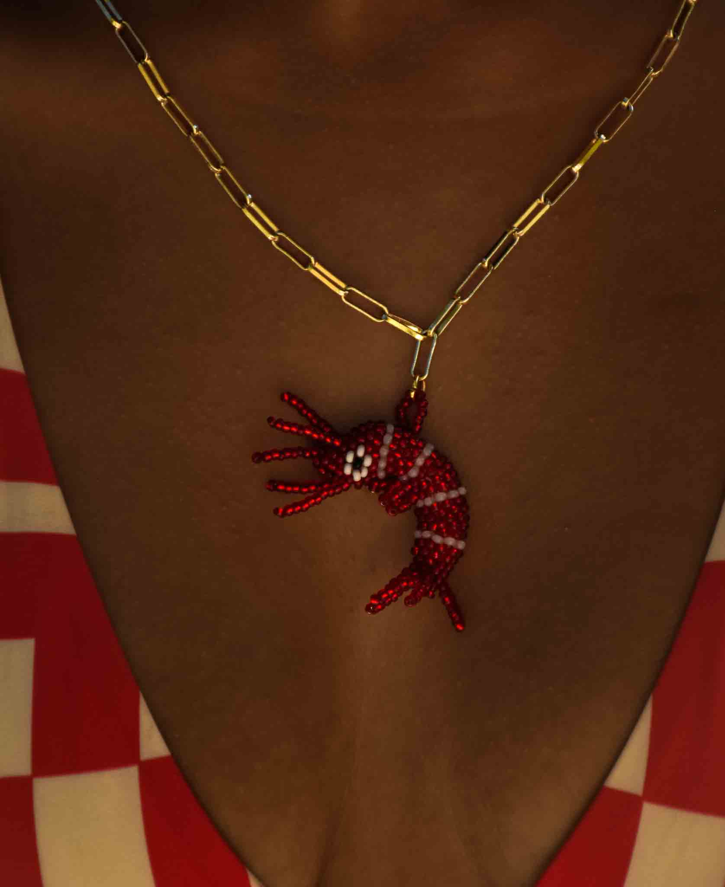
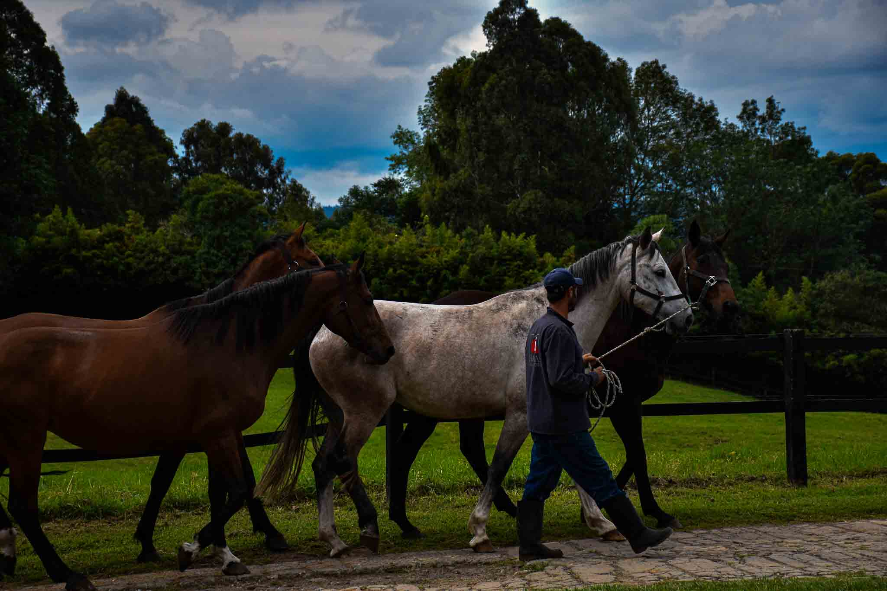

PATRICK THIRIEZ
info
My story begins in Colombia, where I was born and raised.
World around me — the small details in everyday life, the rhythm of the streets, and the quiet presence of nature.
Photography eventually became the way I explored that curiosity. What started as a simple interest slowly grew into a deeper way of seeing and understanding my surroundings. Through my camera, I began to notice moments that often pass unnoticed: fleeting expressions, light hitting a wall in a certain way, or the subtle beauty of plants and animals in their natural environments. Today I’m based in Madrid, where I’m currently studying Graphic Design. My studies allow me to expand the way I think visually — not only through photography, but also through design, composition, typography, and visual storytelling. My photographic work leans naturally toward street photography and the documentation of fauna and flora. I’m drawn to spontaneity, natural light, and real environments. At the same time, I’m currently experimenting with different visual disciplines within graphic design, allowing my creative practice to grow beyond the camera. For me, photography and design are closely connected: both are tools for observation, communication, and storytelling. My goal is to continue developing a visual language that combines both worlds — capturing authentic moments while shaping them through thoughtful design.

PATRICK
THIRIEZ

